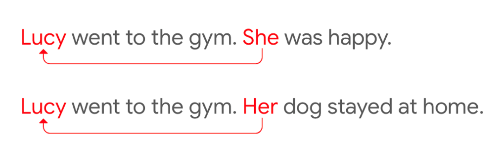
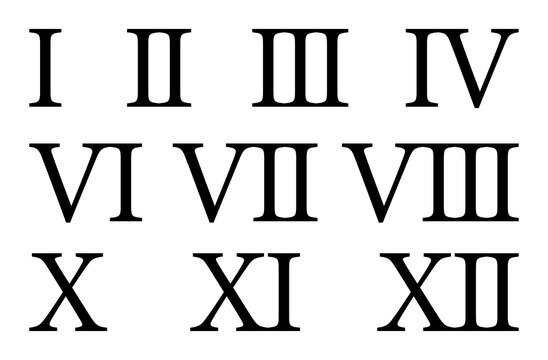

I am a data science enthusiast with two years of experience as a Data Analyst. I am currently pursuing a Master of Science in Applied Data Analytics at Boston University, and upon graduation, I aim to work as a Machine Learning Engineer or Data Scientist.
I have a strong foundation in technical skills such as Python, SQL, Data Visualization, Machine Learning, and Deep Learning, as well as experience working with Big Data. In addition to these technical skills, I pride myself on my ability to communicate effectively, lead and manage teams, solve problems, and consistently deliver high-quality work.
As an aspiring Machine Learning Engineer, I am passionate about exploring the vast potential of ML and AI to solve complex problems. I enjoy the intellectual challenge of designing and implementing ML algorithms using innovative and cutting-edge techniques.
My experience as a Big Data Analyst at Accenture enabled me to analyze complex data sets, identify data quality issues and produce actionable insights for clients. I also have experience in resolving conflicts raised by stakeholders and efficiently managing project dynamics.
My expertise in developing machine learning models and producing detailed reports with charts and visualizations showcases my ability to apply ML techniques to solve diverse problems. From isolated sign language recognition to predicting pitcher's performance, I have experience working on a wide range of ML projects.
I find the field of ML and AI to be constantly evolving and full of possibilities, with new advancements and research being made every day. I am excited to continue exploring and leveraging the full potential of AI to improve people's lives.
Aside from my work, I am passionate about astronomy, quantum computing, and music. I believe that curiosity and the desire to learn are key to success in any field, and I strive to continue learning and growing as a professional in the field of Machine Learning.
In this project, I embarked on an extensive exploration of Amazon SageMaker's capabilities in the realm of machine learning and artificial intelligence. My primary focus was on a binary classification problem, utilizing a dataset of 45,000 rows and 16 columns, and I effectively employed a range of tools, including Amazon SageMaker, AWS S3, XGBoost, SageMaker Autopilot, and Streamlit, to build data science workflows and create a user-friendly real-time prediction application. The project yielded two key insights: Amazon SageMaker simplifies the end-to-end machine learning process by offering a comprehensive platform for data preparation, model development, training, deployment, and monitoring. Furthermore, SageMaker Autopilot showcased a no-code approach, automating feature engineering, data preprocessing, model selection, and evaluation, which expedited the machine learning project lifecycle and democratized machine learning for users with varying levels of expertise. This endeavor demonstrated my proficiency as an entry-level data scientist and machine learning engineer, underlining my ability to streamline workflows, achieve robust model performance, and bridge the gap between data science and practical applications.
In this project, I aimed to address the environmental impact of contrails on global warming. Contrails, formed by aircraft engine exhaust, can contribute to global warming by trapping heat in the Earth's atmosphere. To better understand this issue, I developed a machine learning pipeline that accurately segments contrails in geostationary satellite images, utilizing TensorFlow and the UNet architecture with an EfficientNetB7 backbone. This work improved contrail segmentation accuracy to 62% on a test set of 1,800 images. This project not only streamlined the contrail identification process but also validated climate models designed to mitigate global warming's impact. The dataset used for this project is available on Kaggle, consisting of over 20,000 labeled records and satellite images from NASA's GOES-16 ABI, showcasing our contribution to climate research.

Developed an advanced pronoun resolution system specifically designed to handle ambiguous pronouns, effectively mapping them to their corresponding nouns within paragraphs. Leveraging the power of the BERT base pre-trained network and a feed-forward neural network, achieved a 75% accuracy in accurately resolving ambiguous pronouns. The methodology showcases efficiency and offers a clear pathway for further optimization. By continuously refining and augmenting the system, demonstrated the potential to enhance accuracy up to an 90%.

In this unique Kaggle competition focused on isolated sign language recognition, I optimized a deep neural network to classify videos of American Sign Language into 250 distinct signs. Using TensorFlow, Keras, NumPy, and Pandas, I crafted new hyperparameters and explored various landmarks, preprocessing, and ensemble techniques. What sets this project apart from existing ISLR models is its compact model size of less than 40 MB, reduced latency, and ability to run on mobile devices locally. This achievement supports the Popsign app's objective of identifying signs in processed videos, enabling parents to learn sign language and communicate effectively with their Deaf children. By utilizing landmarks extracted from raw videos using the MediaPipe holistic model, I developed a high-performing model with an test accuracy of 78%. Future improvements can be achieved through data augmentation techniques and the expansion of the dataset.

In this project focused on predicting pitcher's performance, I developed 27 predictive models utilizing linear and polynomial regression techniques. By incorporating statistical testing, data cleaning, and scaling techniques, I ensured the accuracy and reliability of the models. Demonstrating a 95% confidence level, I established that the best model outperformed the mean line, making it a robust tool for predicting player performance. The project focused on relevant features, eliminating irrelevant columns and redundant stats, resulting in a reduced feature set of 15 stats and conditions crucial to a pitcher's performance. This project empowers baseball teams with a reliable tool for predicting pitcher performance, enhancing their decision-making process in selecting the most impactful players for the upcoming season.

In this project, our objective was to develop a predictive model for determining the need for a rapid antigen detection test (RADT) in children with pharyngitis, based on their signs and symptoms. This model aimed to assist physicians in making informed decisions regarding the selection of pediatric patients who should undergo RADT for Group A streptococcus (GAS) infection. To achieve this, we conducted 45 comprehensive experiments, exploring various approaches to identify the optimal model for accurate prediction. Our research and analysis encompassed all stages of the data science pipeline, including exploratory data analysis, missing value handling, data preprocessing, model building, model evaluation, and data visualization. The results were promising, with the developed model achieving a significant F-measure metric of 76%. This highlights the efficacy of our approach using a small dataset in accurately predicting the necessity for RADT in children with pharyngitis. This helps physicians to make informed decisions and streamline the diagnostic process for GAS infection.

In the Data-Centric AI Competition, our focus was on improving the quality and diversity of a roman numerals dataset consisting of 1000 images. To enhance the dataset, we undertook various steps such as cleaning, resizing, and enhancing the images, resulting in improved data quality. Ambiguous labels were addressed by renaming samples based on consensus. Collaboration and brainstorming with peers played a vital role in our data-centric approach. Recognizing underrepresented variants in the dataset, we fabricated new handwritten samples to ensure a more comprehensive representation. Our best submission, submission_4, showcased remarkable performance, achieving approximately 79% accuracy on the competition's leaderboard. By emphasizing data-centric techniques and leveraging the power of a fixed model, we demonstrated the significance of enhancing datasets to improve the overall performance of machine learning models.

In this project, I developed a model using the pre-trained VGG16 Convolutional Neural Network (CNN) model, that accurately estimates the relation between two photos of human faces, achieving an impressive 83% accuracy rate. I produced a detailed report summarizing the results and presented it to higher management, receiving commendation for the quality of work and its potential impact on future initiatives. The project was inspired by a Kaggle competition hosted by Northeastern University, aiming to bridge the gap between facial image classification and other familial markers. Our successful participation in the competition contributes to advancing the field of kinship recognition, with potential applications in ancestry research, forensics, and genealogy studies.